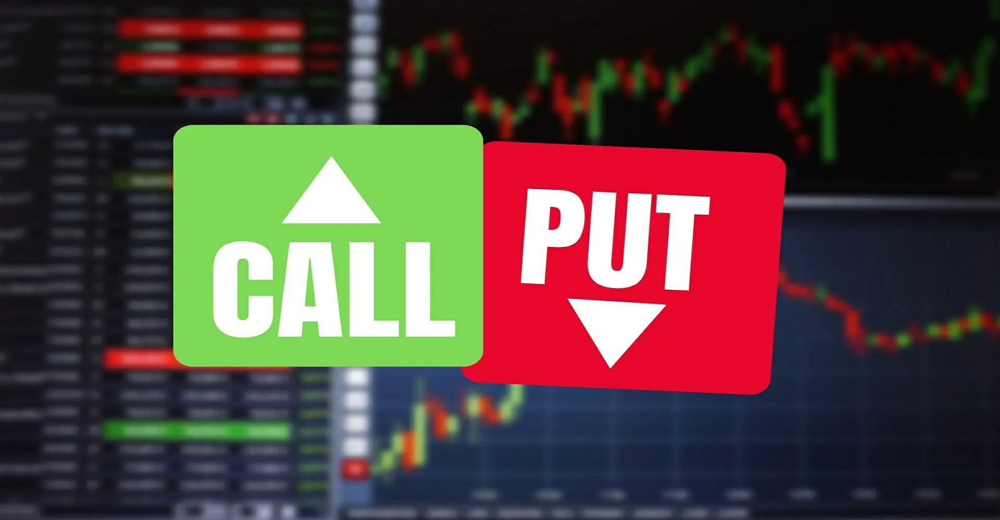

Before diving into options trading proper, it is crucial to understand the fundamentals of options themselves. In this chapter, we will cover the basics of options, including what they are, how they work, and the different types of options available.
Options are financial derivatives contracts that give the buyer the right, but not the obligation, to buy or sell an underlying asset at a predetermined price and date. The underlying asset can be a stock, index, commodity, or currency.

The buyer of an option pays a premium to the seller or writer of the option for the right to buy or sell the underlying asset at the agreed-upon price, also known as the strike price, within a specified time frame, known as the expiration date.
There are two main types of options: call options and put options.
A call option gives the buyer the right to buy an underlying asset at the strike price before the expiration date. If the market price of the underlying asset goes up, the buyer of the call option can purchase the asset at a lower price and make a profit.
However, if the market price of the underlying asset does not go up, the buyer loses the premium paid for the option.
A put option gives the buyer the right to sell an underlying asset at the strike price before the expiration date. If the market price of the underlying asset goes down, the buyer of the put option can sell the asset at a higher price and make a profit.
However, if the market price of the underlying asset does not go down, the buyer loses the premium paid for the option.
Let's illustrate options trading with a simple example involving shares of ABC Company, currently trading at $100 per share.
You purchase a call option for ABC Company with a strike price of $110 and an expiration date of one month, paying a premium of $5 per share ($500 total for 100 shares).
You purchase a put option for ABC Company with a strike price of $90 and an expiration date of one month, paying a premium of $3 per share ($300 total for 100 shares).
These examples show how options offer flexibility and the potential for profit, while limiting possible losses. Options can be used for hedging, generating income, or speculating on market movements. However, it's crucial to understand the risks and mechanics of options trading before starting.
In the next chapter, we will delve deeper into options pricing and the factors influencing their value.